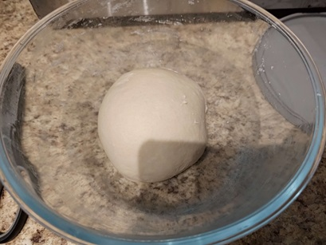
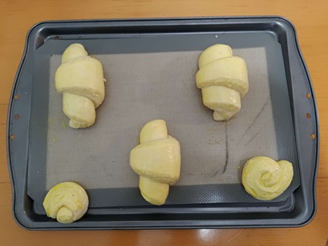

Roughly Mix all ingredients except butter in a large bowl
Let rest for 30 min to autolyse
Knead until the surface is smooth, put in a fridge and chill for 1 hour

Prepare the butter sheet while the dough is chilling. Draw a 20cm x 13cm rectangle on a parchment paper. Fold each side of the rectangle to create creases
Put the butter in the rectangle, fold the parchment paper into a package.
Beat and roll the butter into the shape of the package, put the butter sheet in a freezer.
After chilling, roll the dough into a 42cm x 14cm rectangle. Place the butter sheet at the lower 2/3 of the rectangle.
Cover the middle 1/3 with the top 1/3 of the dough, cut the bare butter and place on top of the folded dough
Fold the lower 1/3 of bare dough to cover the butter, seal all edges to envelope the butter.
This is called the letter fold. Wrap the dough in cling film and chill in the fridge for 30min
Rotate the dough 90 degree, roll it back to a 42cm x 14cm rectangle
(folded edge from last time being the long side, such that the dough does not get wider and wider every fold)
Do a letter fold and chill for 30 min
Repeat the letter fold one more time and chill for another 30 min
This time. roll the dough to 56cm x 14cm. Fold the top 1/4 down and bottom 1/4 up. Then fold the entire dough in half like closing a book, this is called the book fold.
Put in a fridge and chill overnight
Roll the dough to a 42cm x 15cm rectangle
Trim the two ends where you can see the fold pattern, leave about 36cm. Cut the sheet to 3 equal pieces lengthwise (3 12cm x 15cm rectangles).
Cut the three pieces diagonally to create total 6 right angle triangles.
Stretch the triangles to isosceles triangles with the short side being the base. Roll the triangle from the base up. Bend the roll into a crescent shape.
Proof for 3 hours.
Brush with watered down egg yolk.

Preheat the oven to 375 degree C and bake for 20min.